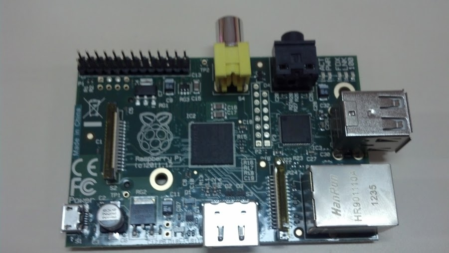

Instalación de Raspbian en un Raspberry Pi.
Publicado el mar 05 febrero 2013 en Tutorial de Linux • 2 min de lectura
Raspberry Pi es una placa de computadora de bajo costo (Más información en wikipedia) desarrollada por el Reino Unido.
En la siguiente figura se muestra un esquema de la placa:

A continuación 2 fotos del unboxing del Raspberry Pi que me llegó hace una semana:


Para poner a funcionar la placa es necesario lo siguiente:
- Un cable de monitor VGA a HDMI.
- Una tarjeta de Memoria SD (mínimo 8 GB).
- Un teclado y ratón USB.
- Cable de red.
- Cargador de Celular microusb.
- Una versión de Linux (para este caso Raspbian una versión de Debian Wheezy para Arquitectura ARM).
Para bajar Rasbian lo pueden hacer desde el siguiente enlace, el número SHA-1 para verificar la integridad del archivo es el siguiente: 514974a5fcbbbea02151d79a715741c2159d4b0a.
El usuario del sistema es pi y la clave raspberry.
Para instalar la imagen del Raspbian en la memoria SD es necesario colocar la memoria en un equipo, descomprimir el archivo descargado y desde la línea de comandos ejecutar un dd (para este caso la memoria se encuentra en /dev/sdb, es necesario verificar la identificación de la memoria antes de ejecutar el comando):
dd dd bs=1M if=./2012-12-16-wheezy-raspbian.img of=/dev/sdb
1850+0 registros leídos
1850+0 registros escritos
1939865600 bytes (1,9 GB) copiados, 1610,06 s, 1,2 MB/s
El siguiente vídeo muestra el proceso de arranque de raspbian.
Vídeo donde se muestra la configuración del raspbian:
Para finalizar se muestra una foto del escritorio LXDE del Raspbian:

¡Haz tu donativo! Si te gustó el artículo puedes realizar un donativo con Bitcoin (BTC) usando la billetera digital de tu preferencia a la siguiente dirección: 17MtNybhdkA9GV3UNS6BTwPcuhjXoPrSzV
O Escaneando el código QR desde la billetera: